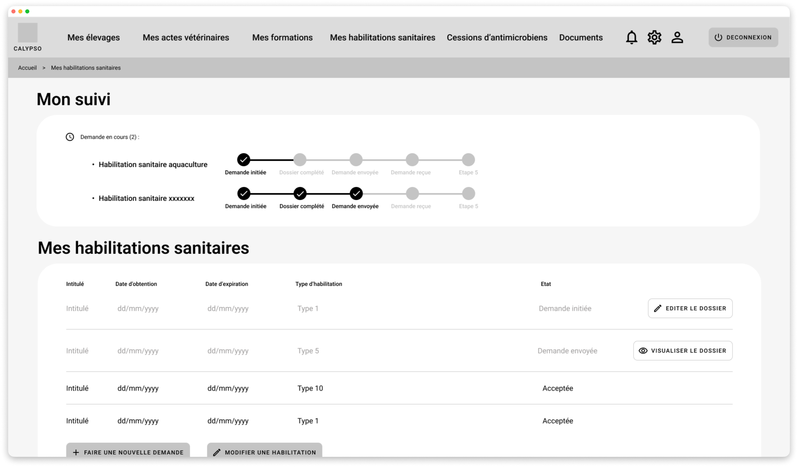

Démarche UX pour un outil à destination des vétérinaires
Contexte
Dans le cadre de la conception d’un outil numérique pour une organisation nationale, une équipe projet a sollicité un accompagnement UX afin de structurer la démarche de conception et d’assurer la cohérence des choix fonctionnels et ergonomiques.
Objectifs
L’enjeu était de proposer une méthodologie adaptée et des livrables pertinents, tout en portant une attention particulière à l’expérience utilisateur. L’interface devait répondre à des besoins de simplicité et d’intuitivité, dans un contexte marqué par une réticence au changement de la part des utilisateurs cibles.
Rôle & démarche
- Analyse fonctionnelle des besoins et des contraintes du projet ;
- Conception de maquettes fonctionnelles adaptées aux usages métier ;
- Conception et facilitation d’ateliers utilisateurs pour impliquer les parties prenantes et lever les freins à l’adoption ;
- Production de spécifications IHM à destination des équipes de développement.
Impact / Résultats
- Méthodologie UX partagée et comprise par les équipes projet ;
- Les ateliers utilisateurs ont favorisés l’adoption et réduits la résistance au changement ;
- Meilleure prise en compte des usages réels des vétérinaires dans les choix de conception ;
- Spécifications IHM claires facilitant le développement et la mise en œuvre du projet.
